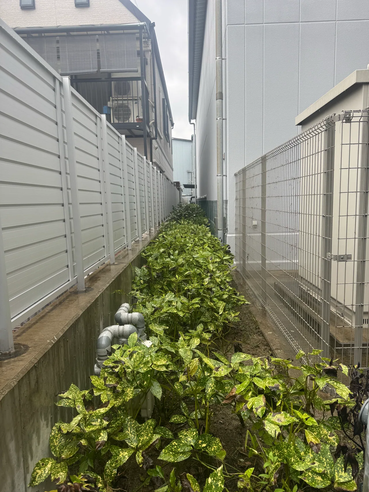

重機が入らない場所でもご相談いただけます。ただし、木へ近づく経路、作業する足場、枝や幹を下ろす空間、切った木を運ぶ道を確認してから、対応できる方法を検討します。

入口の幅だけでは作業方法は決まらない
門を通れるかは大切ですが、その先に曲がり角や階段があれば、機材や切った木の運び方も変わります。道路側の写真に加えて、入口から対象の木までの道筋を送ってください。正確な寸法が分からなくても、「人が一人通れる程度」「途中に階段がある」といった説明から相談できます。危険な場所へ入って幅を測る必要はありません。
木を切る空間と、枝を下ろす空間を分けて見る
木の足元に立てるだけで、すべての作業条件が揃うわけではありません。近くの屋根や塀、隣家、植栽、物置などの位置関係を確認します。上から枝や幹を分けて下ろす必要がある場合は、木の状態や支える条件なども検討します。写真だけでロープ作業を必ず実施できるとは断定せず、必要なら現地で方法を確認します。
狭い庭では搬出の負担も見積に含める
切った木を小さく分ける、手で運ぶ、通路や建物を保護するといった作業が必要になる場合があります。木の高さが同じでも、道路に面した場所と建物の裏では費用条件が揃いません。見積を比べる際は、伐採費だけでなく、搬出、処分、養生、片付けの範囲を確認してください。作業後に残したい植栽や設備も先に伝えると、作業範囲を整理できます。
事前に物を動かすかは相談してから
作業しやすくするために片付けを考える場合も、どこを空ける必要があるかを先に相談してください。塀やフェンスの撤去、隣地の利用、車両の移動などが必要かは現場条件によって異なります。許可が必要な場所を自由に使える前提で見積を進めないことが大切です。自分で木に登ったり、大きな枝を切って準備したりせず、現状の写真から相談できます。
相談前に揃えたいこと
- 門から木までの道筋と階段
- 枝の下にある屋根・物置・植栽
- 車両を停められる場所
- 残したいものと立入りできない範囲
竜樹伐採では、奈良市を中心に奈良県内の伐採をご相談いただけます。写真と市町村、希望する作業範囲をお送りください。写真による概算で分からない条件は、現地確認の要否も含めてご案内します。
現場の状態によって、対応できる方法や費用は変わります。この記事は個別の現場の診断や正式見積に代わるものではありません。